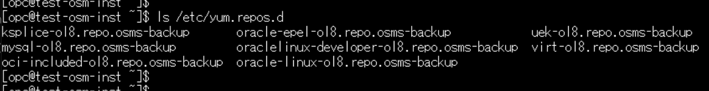
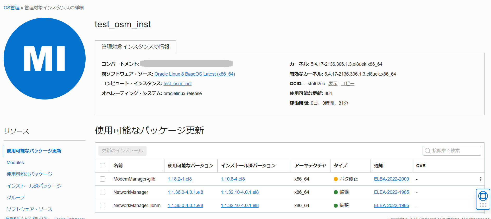
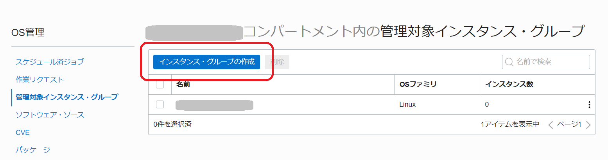
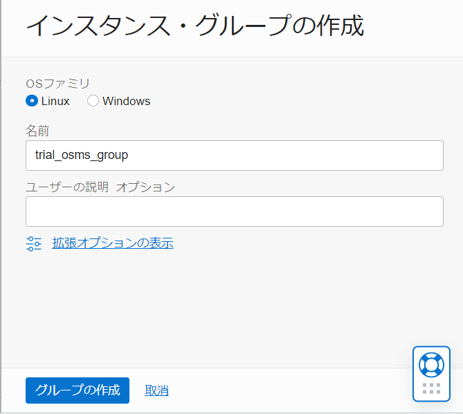
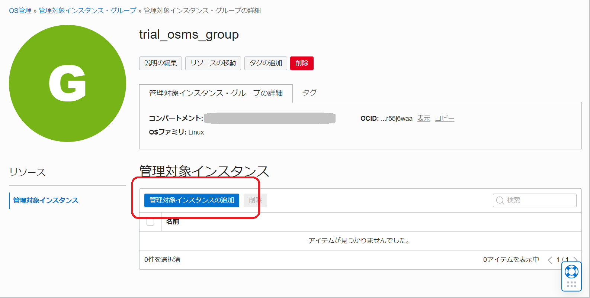
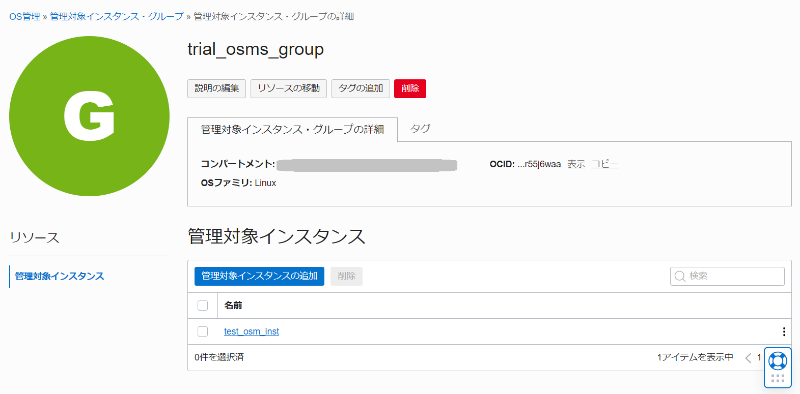
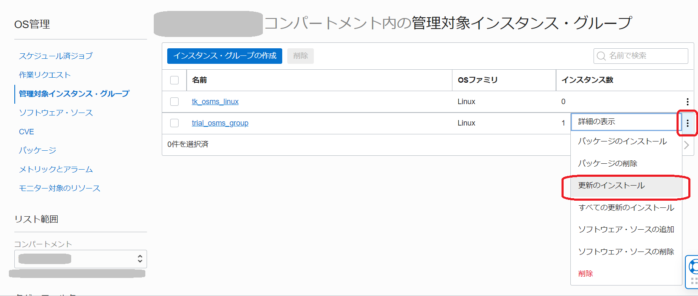

Oracle Cloud上でコンピュート・インスタンスを運用する場合、OS以上のレイヤーはユーザの管理範囲となっています。つまりユーザ側でOSの更新やセキュリティ・パッチの適用などを行う必要がありますが、これらの運用は効率的にできているでしょうか？特にインスタンスの数が多くなってくるとOSのアップデートなどの管理作業も大変です。
これらのOSのユーザによる管理作業を効率的に実施するのに役立つ機能として、OCIではOS管理サービスを利用することができます。
この章では、OS管理サービスでLinuxのコンピュート・インスタンスのOSのパッケージ更新やセキュリティ・パッチの適用を行っていきます。
所要時間 : 約30分
前提条件 :
- インスタンスを作成する - Oracle Cloud Infrastructureを使ってみよう(その3) を通じてコンピュート・インスタンスの作成が完了している、もしくは本章の中で新規にインスタンスを作成する。
注意 : チュートリアル内の画面ショットについては Oracle Cloud Infrastructure の現在のコンソール画面と異なっている場合があります。
1. IAMポリシーの設定
OS管理を利用するために必要な権限をIAMポリシーで設定します。以下のポリシーが必要です。
-
ユーザがOS管理を操作するための権限（環境に応じて適切に設定してください）
allow group <グループ名> to manage all-resources in tenancy / in compartment <コンパートメント名> -
OS管理サービスがインスタンスを参照するための権限
Allow service osms to read instances in tenancy -
対象のインスタンスがOS管理サービスに連携できるようにする権限
-
メニュー アイデンティティとセキュリティ → アイデンティティ → 動的グループ を開く

-
動的グループの作成 ボタンをクリックし、以下の内容を入力し、左下の 作成 ボタンをクリック。
-
名前 - 任意の名前を入力
-
説明 - 任意の説明を入力
-
一致ルール ルール1 - インスタンスを示すルールを入力
-
例1）コンパートメントOCIDで指定する場合。今回はこの形で設定していきます。この場合、コンパートメント内のすべてのインスタンスが対象となります。今後同じコンパートメント内でインスタンスを作成した際にはすべてOS管理から管理が利用可能となります。
instance.compartment.id = 'ocid1.compartment.oc1..xxxxxxxxxxxxxxxxxxxxx' -
例2）インスタンスOCIDで指定する場合。作成済みの特定のインスタンスのみを対象とする必要がある場合には、インスタンス作成後にインスタンスのOCIDを指定して特定することも可能です。
instance.id = 'ocid1.instance1.oc1.xxxxxxxxxxxxxxxxxxx' -
複数の条件を Any もしくは All で設定することも可能。

-
-
-
作成した動的グループに対するIAMポリシーを作成する。
Allow dynamic-group <動的グループ名> to read instance-family in tenancy Allow dynamic-group <動的グループ名> to use osms-managed-instances in tenancy
-
2. 管理対象となるインスタンスの作成
まずは管理対象となるコンピュート・インスタンスを作成します。今回は、Oracle Linuxのインスタンスを使用します。
OS管理サービスでは、サポートされているOracle LinuxおよびWindowsプラットフォーム・イメージおよびそれらのイメージに基づくカスタム・イメージでサポートされます。サポートイメージの詳細はマニュアルを参照してください。
ここでは、Oracle Linux 8 のプラットフォーム・イメージで起動したインスタンスを使用していきます。
-
インスタンスの作成方法は、基本的に、インスタンスを作成する - Oracle Cloud Infrastructureを使ってみよう(その3) を参考にして作成してください。
-
インスタンス作成画面の必要事項を入力したら、一番下の 拡張オプションの表示 をクリックし、 Oracle Cloud エージェント タブを開きます。 OS管理サービス・エージェント にチェックが入っていることを確認してから、左下の 作成 ボタンをクリックしてください。デフォルトで有効になっています。

-
インスタンスが起動した後に、Oracle Cloudエージェントのプラグインの状況を確認しておきます。インスタンスの詳細 画面で Oracle Cloudエージェント タブをクリックし、プラグイン名 OS管理サービス・エージェント が、プラグインの有効化「有効」、ステータス「実行中」となっていることを確認します。

3. プラグインのステータス確認
インスタンスのOSにログインし、インスタンスがOS管理サービスに正しくアクセスできるかどうかを確認します。
-
インスタンスのOSにopcユーザでsshでログインします。手順は、「その3 - インスタンスを作成する → 3.インスタンスへの接続」を参考にしてください。
-
opcユーザで以下のコマンドを実施します。（リージョン識別子は、Tokyoリージョンの場合は、ap-tokyo-1 です。）
curl https://ingestion.osms.<リージョン識別子>.oci.oraclecloud.com/以下のように「403 Forbidden」の出力が出れば正しくアクセスができています。

-
以下のコマンドを実行し、yumリポジトリの構成を確認します。
ls /etc/yum.repos.d以下のように、 *.repo のファイルがすべて *.repo.osms-backup としてバックアップされていることを確認します。 
-
OS管理サービスのエージェントのプロセスが動作していることを確認します。
ps -elf | grep osms | grep -v grep以下のようにosms関連のプロセスがいくつか表示されれば問題ありません。

ここまでで、OS管理サービスを使用してインスタンスを管理する準備ができました。
次からは実際のOS管理サービスの機能を見ていきましょう。
4. Linuxパッケージの更新(すべてのセキュリティ更新のインストール)
OS管理サービスでは、パッケージやカーネルの更新が可能です。ここでは、Linuxのパッケージの更新を試してみましょう。
-
まずは、セキュリティ更新をインストールしてみます。対象のコンピュート・インスタンスの詳細ページから、OS管理サービスの情報を表示します。メニューから、コンピュート → インスタンス → 該当のインスタンスを選択 でインスタンスの詳細ページを開きます。
-
インスタンスの詳細 ページで一番下までスクロールし、リソースの中の OS管理 をクリックします。使っているOSで使用可能な更新の個数などのOS管理の概要が表示されます。
-
ここではまずセキュリティ更新をインストールしてみます。OS管理の概要タブの中の「・・・」部分にカーソルをあててメニューを表示し、セキュリティ更新のインストール をクリックします。

-
すべてのセキュリティ更新のインストール のウィンドウが開きます。更新のインストール ボタンをクリックします。

-
OS管理の管理対象インスタンスの詳細ページに自動的に遷移します。スケジュール済ジョブとしてセキュリティ更新のインストールが定義されたことが分かります。今回は単発の実行なので繰り返し設定などはされておらず、即時にスケジュールされて実行されていることがわかります。

-
ページを下までスクロールして リソース の中の 作業リクエスト を開きます。パッケージが順次インストールされて行っている様子がわかります。すべてのパッケージのインストールが成功になるまでそのまま待機します。

-
このようにすべてのパッケージのインストールが成功のステータスになれば、更新は完了しています。

-
もう一度インスタンスの詳細画面のOS管理の概要を表示してみましょう。さきほど 51 と表示されていたセキュリティの更新が 0 になっていることがわかります。これで、現時点で使用可能なセキュリティの更新はすべてインストールできました。

5. Linuxパッケージの更新(特定のパッケージのインストール)
さきほどはインストールするパッケージを選択せず、セキュリティの更新を一括ですべてインストールしましたが、今度は特定のパッケージを選択してインストールしてみます。
-
メニューから、コンピュート → OS管理 → 該当のインスタンスを選択 でインスタンスの詳細ページを開きます。
-
ページを下までスクールして、リソース の中の OS管理 を選択します。OS管理の概要タブの中の「・・・」部分にカーソルをあててメニューを表示し、OS管理詳細の表示 をクリックします。

-
OS管理の管理対象インスタンスの詳細ページが開きます。 
-
使用可能なパッケージ更新 の中から好きなパッケージを選択します。今回は特にどのパッケージでも構わないので、どれかのパッケージのチェックボックスにチェックを入れて、更新のインストール ボタンをクリックします。（一番上のチェックボックスにチェックを入れれば全ての更新をインストールすることも可能です。）

-
パッケージ更新のインストール 画面で、今すぐインストール を選択し、左下の パッケージ更新のインストール をクリックします。

-
リソース → 作業リクエストを開くと、今回は1つのパッケージの更新が行われていることが分かります。しばらく待機します。

-
ステータスが 完了 になれば、更新は完了です。

ここまで、Linuxインスタンスへのパッケージ更新の作業を実施しました。非常に直感的に簡単にコンソール上からの作業ができることがお分かりいただけたと思います。今回は即時実行を行いましたが、運用に合わせてスケジュールを組むことも可能です。
6. 管理対象インスタンス・グループの作成
OS管理サービスでは、管理対象のインスタンス・グループを作成することで、複数のインスタンスを一括して管理していくことができるのも特徴のひとつです。今回はインスタンスは1つのみですが、グループ化の操作をためしてみましょう。
-
メニューから コンピュート → OS管理 → 管理対象インスタンス・グループ をクリックします。

-
インスタンス・グループの作成 ボタンをクリックします。 
-
表示された インスタンス・グループの作成 ウィンドウで以下の項目を入力し、左下の グループの作成 ボタンをクリックします。
- 名前 - 任意の名前を入力。ここではtrial_osms_groupとしています。
- ユーザの説明 - 空欄で構いません。必要に応じてわかりやすい説明をつけることもできます。

-
自動的に作成した管理対象インスタンス・グループの詳細ページが開くので、 管理対象インスタンスの追加 ボタンをクリックします。 
-
管理対象インスタンスの追加 ウィンドウが開いたら、対象とするインスタンス（先ほど作成したインスタンス）にチェックを入れて、左下の 管理対象インスタンスの追加 ボタンをクリックします。 注）もしこの段階で対象のインスタンスが見つからない場合は、手順1の動的グループやポリシー設定ができていない、あるいはインスタンスのプラグインが動作していないなどの可能性が考えられます。

-
管理対象インスタンスの追加ができました。これで設定作業は完了です。 
-
管理対象インスタンスの名前をクリックし、管理対象インスタンスの詳細ページで、この時点で更新可能なパッケージの名前を控えておきます。どれでもかまいません。

-
管理対象インスタンス・グループ の一覧ページに戻り、作成したインスタンス・グループの右側の「・・・」にカーソルをあて、更新のインストール のメニューをクリックします。 
-
更新のインストール ウィンドウ で、右上の検索ボックスにさきほど控えておいたパッケージの名称を入力してEnter入力しています。）出てきた検索結果のパッケージにチェックをいれ、左下の 更新のインストール をクリックします。

-
更新のインストールが始まると、OS管理サービスの作業リクエスト画面が開きます。ステータスが進行中となっています。成功になるまで待機します。

-
成功ステータスになれば更新は完了です。
以上でこの章の内容は完了です。今回はOS管理サービスを使ってLinuxのパッケージ更新を試してみました。OCIコンソールからGUIベースで簡単にパッケージ更新などの操作ができることがわかりました。